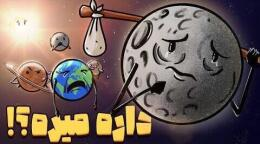

چرا ماه آرامآرام زمین را ترک میکند؟

خورشید گرم میکند، زمین در مدارش میگردد و ماه هم دور زمین میچرخد. با این حال ماه دارد زمین را ترک میکند؛ خیلی آرام. هر سال حدود ۳٫۸ سانتیمتر از ما دورتر میشود. اگر بخواهیم حساب کنیم کی از مدار زمین جدا میشود، عددی نزدیک چند ده میلیارد سال درمیآید. خیلی قبل از آن، حدود ۵ میلیارد سال دیگر، خورشید به غول سرخ تبدیل میشود.
چرا ماه دور میشود؟
این کار یک بازی گرانشی بین ماه و زمین است که به آن تعامل جزر و مدی میگویند. زمین ماه را نگه میدارد و ماه هم زمین را میکشد. همین کشش آب اقیانوسها را بالا و پایین میبرد؛ همان جزر و مد روزانه.
وقتی ماه آب را به سمت خودش میکشد، روی سطح اقیانوس برآمدگی درست میشود. چون زمین میچرخد، این برآمدگی دقیقاً زیر ماه نمیماند و کمی جلوتر میایستد. گرانش ماه به همان برآمدگی جلویی نیرو میدهد و ماه را کمی به جلو میکشد. ماه انرژی میگیرد و آرامآرام از زمین دور میشود.
این جابهجایی انرژی از چرخش زمین میآید. زمین بخشی از انرژی چرخشش را به ماه میدهد؛ برای همین سرعت چرخش زمین کم میشود و روزها به مرور طولانیتر میگردند.
یک تصویر ساده
تصور کن کودکی به نام ماه دست پدرش زمین را گرفته و در پارک میچرخند. پدر قویتر است، پس کودک دور او میگردد و کمی به جلو کشیده میشود. چون کودک دست پدر را میکشد، چرخیدن پدر هم کمی کندتر میشود و فاصلهشان آرام زیاد میگردد. کشش و جلو رفتن کودک همان چیزی است که برای ماه رخ میدهد.
اگر ماه از مدار بیرون برود
ماه مثل وزنهٔ تعادل زمین است. محور چرخش زمین امروز حدود ۲۳٫۵ درجه کج است و ماه کمک میکند این کجی تقریباً ثابت بماند. بدون ماه، محور ممکن است خیلی بیشتر تاب بخورد. در آن حالت قطبها ممکن است گرمتر شوند و استوا سردتر؛ آبوهوا بههم میریزد.
ماه مسئول اصلی جزر و مد دریاست. خورشید فقط حدود چهل درصد این اثر را میسازد. اگر ماه برود، جزر و مد خیلی ضعیف میشود و زندگی بسیاری از موجودات ساحلی سخت میگردد. گرانش ماه روی پوسته هم اثر کوچکی دارد؛ نبودنش آن اثر را کم میکند، اما بیثباتی محور میتواند غیرمستقیم زمینلرزه و تغییر جغرافیایی بیاورد.
آیندهٔ زمین
زمین بدون ماه هم میتواند به زندگی ادامه بدهد، ولی کار سختتر میشود: آبوهوای بیثبات، گرما یا سرمای ناگهانی، و محور لرزان. بعضی گونهها شاید خود را جور کنند؛ اما زمین دیگر همان سیارهای که حالا میشناسیم نخواهد بود. خبر خوب این است که این جدایی آنقدر کند است که تا عمر خورشید به آن نمیرسیم. تا فکر بعدی، کنجکاو بمان.